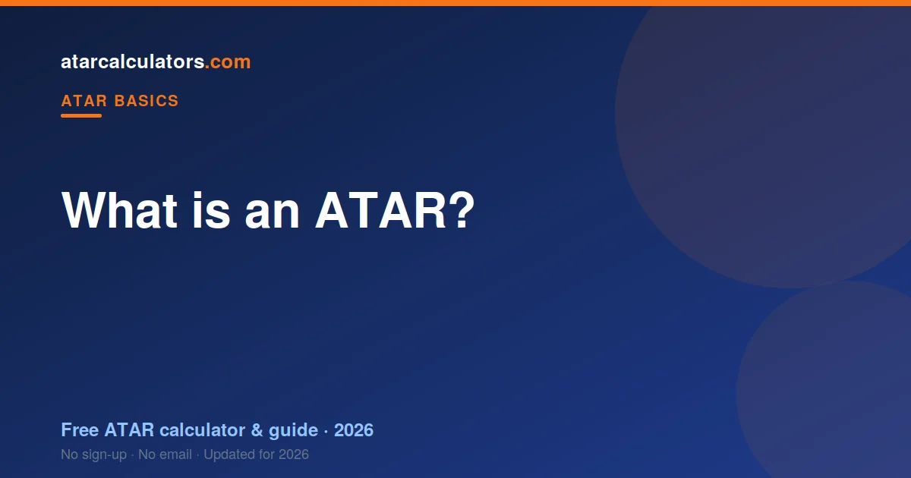

The ATAR (Australian Tertiary Admission Rank) is a number between 0.00 and 99.95 that shows where you rank against your Year 12 age group. It is a rank, not a mark. An ATAR of 80.00 means you finished ahead of about 80% of students. Universities use it to compare students who studied completely different subjects, and it is the main number used for entry into most undergraduate courses.
Key takeaways
- The ATAR is a rank from 0.00 to 99.95, not a mark or a percentage of questions you got right.
- An ATAR of 80.00 means you ranked in the top 20% of your age group.
- It lets universities compare students who studied different subjects fairly.
- The highest possible ATAR is 99.95; scores below 30 are usually reported as “less than 30”.
- Every state uses the same ATAR, worked out by a different admissions centre (UAC, VTAC, QTAC and others).
- Your ATAR comes from your scaled results, so how your subjects scale matters.
- The ATAR is one way into university, not the only way — many pathways exist.

What does ATAR stand for?
ATAR stands for Australian Tertiary Admission Rank. Each word tells you something useful. Australian means it is used across the country. Tertiary Admission means it exists to help you get into tertiary study, which is university and some other courses. Rank is the most important word, and it is the one most students miss.
The ATAR is a rank. It places you in order against everyone else your age, from top to bottom. It does not measure how many marks you scored, or what percentage of an exam you got right. It measures where you finished compared with other students.
That one idea explains almost everything else about the ATAR. Once you see it as a rank, the odd maximum, the scaling, and the way “good” depends on your goal all start to make sense.
A rank, not a mark
This is the single most important idea about the ATAR, so it is worth being clear. Your ATAR is not a score out of 100. It is a percentile rank.
An ATAR of 80.00 does not mean you got 80% on your exams. It means you finished ahead of about 80% of your age group. An ATAR of 95.00 means you finished in the top 5%. An ATAR of 99.95, the highest possible, means you are in the top handful of students in the state.
Because it is a rank, only a fixed share of students can reach each level. Roughly 1% of students get an ATAR of 99 or above, no matter how strong the year group is. That is by design. The ATAR is built to sort students into order, not to reward a fixed score.
This also means your ATAR depends on everyone else, not just on you. You could score exactly the same marks in two different years and get slightly different ATARs, because the students you are ranked against are different each time.
Why the ATAR is out of 99.95, not 100
The odd-looking maximum of 99.95 surprises people. It comes from how the rank is reported. ATARs are given in steps of 0.05, from 0.00 up to 99.95. There is no 100.00, because the very top band is 99.95.
At the other end, most admissions centres do not report an exact number below 30.00. Instead they show “less than 30”. This avoids labelling students with very low ranks, while still letting universities see who has cleared the levels they care about.
The steps of 0.05 also tell you something. At the very top, a tiny difference in your marks can move your ATAR by a few of those steps, because so many strong students are packed close together. Lower down the scale, the same mark difference moves you less.
ATAR versus marks versus GPA
Students often mix up three different things: their marks, their ATAR, and a GPA. They are not the same, and it helps to keep them apart.
Your marks are how you did in a single subject, like 85 in Biology. Your ATAR is a rank that combines your scaled marks across subjects and places you against your whole age group. A GPA (grade point average) is something you get later, at university, by averaging your course grades.
So the ATAR sits between school and university. It takes your school marks, turns them into a single national rank, and uses that rank to help you get in. Once you are at university, your GPA takes over, and your ATAR stops mattering.
Who works out your ATAR?
You sit Year 12 with your state’s school authority, but your ATAR is calculated by a separate body called a tertiary admissions centre. Which one depends on where you study:
- NSW and ACT — UAC (the Universities Admissions Centre).
- Victoria — VTAC.
- Queensland — QTAC.
- South Australia and the NT — SATAC.
- Western Australia — TISC.
- Tasmania — worked out through UTAS with TASC.
These centres all produce the same thing: an ATAR on the same 0.00 to 99.95 scale. The methods differ slightly from state to state, but the result means the same everywhere. That is what lets a student in Perth and a student in Sydney be compared for the same course.
It also means your school does not set your ATAR, and neither do the universities. A separate, state-level body does the sums, using the same rules for every student.
Where your ATAR actually comes from
Your ATAR is not your raw marks. It is built from your scaled results. Scaling is the step that adjusts each subject so that a result in one subject means the same as the same result in another.
The short version of the process is this. First, your results in each subject are scaled, based on how strong the group taking that subject was. Then your best scaled results are added together into an aggregate. Finally, that aggregate is ranked against everyone else and turned into your ATAR.
Scaling is why students talk so much about which subjects “scale well”. A subject scales up when the students taking it are strong across all their subjects, and down when the group is broader. It is not that hard subjects get a bonus — it is that strong cohorts lift a subject. We explain the full process in how is ATAR calculated.
A full worked example
Numbers make this clearer. Imagine a student who takes five subjects and, after scaling, ends up with these scaled results out of 50: English 38, Maths 40, Biology 42, Business 35 and Geography 30.
The admissions centre takes the student’s best results and adds them into an aggregate. The strongest subjects — Biology, Maths and English here — do most of the work. The weakest, Geography, barely moves the total, and might not count at all once the better results are in.
That aggregate is then lined up against every other student’s aggregate in the state. If this student’s aggregate sits higher than 87% of them, their ATAR is about 87.00. Notice what happened: the student did not need to top any single subject. Consistent, strong results across a few subjects produced a high rank.
This is why a spare subject is useful. If one subject goes badly, your best results still count, and the weak one quietly drops out of your aggregate.
What counts as a good ATAR?
Because the ATAR is a rank, a “good” one depends on what you want to do with it. The median ATAR for students who receive one sits around 70. So an ATAR of 70 is genuinely middle of the pack, not a poor result.
As a rough guide, an ATAR of 80 or above opens most university courses. An ATAR of 90 or above is competitive for in-demand degrees. The most competitive courses, such as medicine and law at leading universities, often ask for 95 and above. We cover this in detail in what is a good ATAR.
The most useful way to think about it is to work backwards. Find the course you want, look up its cut-off, and aim a little above it. That turns a vague goal into a clear target.
Do you always need an ATAR?
No. The ATAR is the main path into university straight from Year 12, but it is not the only one. Many students enter through other routes.
Common alternatives include a diploma or a TAFE qualification that leads into a degree, an enabling or foundation program, a portfolio or audition for creative courses, and special entry schemes for students who faced disadvantage. If your ATAR is lower than you hoped, these pathways are worth knowing about early.
Some courses do not use the ATAR at all, and some students choose not to sit for one. Not receiving an ATAR does not close the door to university — it just means you take a different way in.
Is the ATAR the same in every state?
Yes, the ATAR itself is national. A 90.00 in Tasmania is treated the same as a 90.00 in Queensland when you apply for university anywhere in the country.
What changes between states is the exam system behind it, and the admissions centre that does the sums. NSW students sit the HSC, Victorian students the VCE, Queensland students the QCE, and so on. Each feeds into the same national rank at the end.
The states also combine your subjects a little differently. NSW counts ten units of scaled marks; Victoria uses an English study plus your best three, with a small contribution from two more; Queensland uses your best five scaled results. Different inputs, same 0.00 to 99.95 output.
A short history of the ATAR
The ATAR is newer than many people think. Before it, each state had its own Year 12 rank with its own name. Queensland used the OP, Victoria used the ENTER, New South Wales and the ACT used the UAI, and several other states used the TER.
Most states replaced these with the national ATAR around 2009 and 2010. Queensland held on to the OP the longest, moving to the ATAR only in 2020. Since then, every state and territory has used the same rank. If a parent talks about their “OP” or “ENTER score”, that is the older system. See ATAR vs OP vs ENTER for the full story.
International and mature-age students
International students studying an Australian Year 12 overseas can receive an ATAR, often reported as a notional ATAR. Students who take the International Baccalaureate receive a score that is converted to an ATAR-equivalent for university applications.
If you are a mature-age student who did not finish Year 12, you usually will not have an ATAR, and you do not need one. Universities offer separate entry for mature-age applicants, often using an aptitude test such as the STAT, previous study, or work experience instead.
What students get wrong about the ATAR
The biggest mistake is treating the ATAR as a percentage. It is a rank. A close second is choosing subjects only because they “scale well”, then scoring poorly in them. A strong result in a subject you are good at almost always beats a weak result in a high-scaling one.
Another common error is thinking your school decides your ATAR. It does not. Your ATAR is worked out at the state level against every student, so a strong student is treated the same whatever school they attend. We bust more of these in common ATAR misconceptions.
A final one is panic about a single bad assessment. Because your ATAR uses your best results across a whole year, one poor task rarely decides it. Consistency matters far more than any single mark.
Estimate your ATAR now
The clearest way to understand the ATAR is to see how your own results might land. Our ATAR calculators let you enter your subjects and marks and get an estimate, using the latest official scaling data for your state.
An estimate is not your official result, which only your admissions centre can give. What it does is show you where you stand now, so you can set a realistic target and plan the rest of Year 12 around it.
Common questions
What does ATAR stand for?
ATAR stands for Australian Tertiary Admission Rank. It is the national rank used to compare Year 12 students for entry into university and other tertiary courses.
Is the ATAR out of 100?
No. The ATAR runs from 0.00 to 99.95, in steps of 0.05. There is no 100.00, and it is a rank rather than a score out of 100.
What's the difference between an ATAR and a mark?
A mark is how you did in one subject. An ATAR is a rank that combines your scaled results and places you against your whole age group, so universities can compare students who studied different subjects.
What is the maximum ATAR?
The highest possible ATAR is 99.95. It means you are among the very top students in your state for that year.
What is the lowest ATAR you can get?
Admissions centres usually report anything below 30.00 as “less than 30” rather than an exact number. Everyone who receives an ATAR has passed Year 12; a low ATAR is not a fail.
Does Queensland use the ATAR?
Yes. Queensland switched from the OP system to the ATAR in 2020. Queensland students now receive an ATAR worked out by QTAC, the same as the rest of the country.
Can your ATAR change after you receive it?
No. Once your ATAR is released it is fixed. What can change is your selection rank for a course, if a university adds adjustment factors on top of your ATAR.
Do all universities use the ATAR?
Most undergraduate courses use the ATAR as a main entry measure, but not all. Some use portfolios, auditions, aptitude tests or interviews, and many offer pathways that do not rely on the ATAR at all.
Can international students get an ATAR?
Students taking an Australian Year 12 curriculum, including overseas, can receive an ATAR, sometimes reported as a notional ATAR. International Baccalaureate scores are also converted to an ATAR-equivalent for applications.